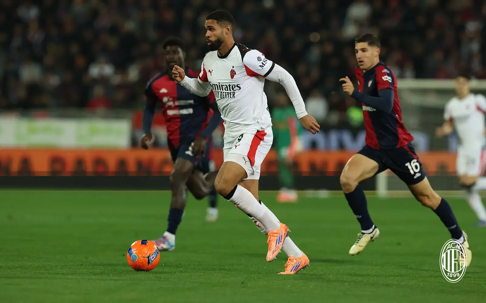

Sports event: Cagliari Vs AC Milan
A high-stakes football match lit up the Sardegna Arena as Cagliari Calcio took on the prestigious AC Milan. This highly anticipated sporting event brought immense excitement to the local fans.
Read more
The atmosphere in Cagliari reached fever pitch at the end of November as the Sardegna Arena hosted one of the most thrilling fixtures of the Italian Serie A calendar. The beloved local team, Cagliari Calcio, faced off against the European football giants, AC Milan, in a match filled with intense tactical battles and spectacular athletic displays. For the passionate Sardinian supporters, known as the Rossoblu, this was much more than just a regular league game; it was a grand celebration of regional pride and unity. Thousands of fans gathered hours before kickoff, coloring the city streets with flags and chants, proving once again that football in Cagliari is a profound cultural phenomenon that brings the entire community together.